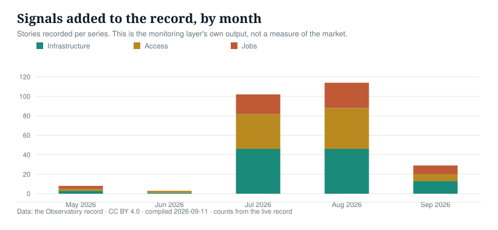

One definition per metric, one source per row, statuses that are never mixed and gaps stated as numbers. This page is the contract behind every figure.
Stories recorded per series. This is the monitoring layer's own output, not a measure of the market

| Month 2026 | Jobs | Access | Infrastructure | Total |
|---|---|---|---|---|
| May | 3 | 2 | 3 | 8 |
| Jun | 0 | 2 | 1 | 3 |
| Jul | 20 | 36 | 46 | 102 |
| Aug | 26 | 42 | 46 | 114 |
| Sep | 9 | 7 | 13 | 29 |
A single place where AI's economic effect on Africa is recorded with its source, its status and the date it last moved. Three series, each with a defined unit: infrastructure, access and jobs. Every row can be traced to a named source, and every chart can be downloaded as a file and cited.
A row is a fact, not a story: a facility with a capacity figure and a status, a model with a price and a capability score, a device market with a measured change. Headlines are recorded separately as signals and never mixed into the registers.
Completeness cannot be guaranteed on a continent where much capacity is privately built and undisclosed. What is guaranteed is a published definition per metric, a source per row, statuses that are never mixed, gaps stated as numbers, and a null that stays null rather than becoming an estimate.
A row is an evidence status and a temporal status, never one blended label. The cross-tab below is every combination actually present in this release, and whether that combination may enter a headline series.
| Evidence status | Temporal status | Rows | Headline |
|---|---|---|---|
| trade reporting | measured | 17 | never headlines |
| unclear | measured | 8 | never headlines |
| unclear | announced | 7 | never headlines |
| industry body | measured | 6 | may headline |
| trade reporting | announced | 4 | never headlines |
| industry body | forecast | 1 | never headlines |
| industry body | projection | 1 | never headlines |
| official | measured | 1 | may headline |
| trade reporting | forecast | 1 | never headlines |
| trade reporting | projection | 1 | never headlines |
| trade reporting | proposal | 1 | never headlines |
Every row carries the tier of its evidence. Where a trade report is the only source for a field, the field is marked unverified and excluded from headline series.
| Tier | Examples | Used for |
|---|---|---|
| Primary filing | Planning registers, grid connection records, regulator notices | Capacity, consent, energisation |
| Company filing | Results presentations, operator press releases | Capacity, commissioning dates, prices |
| Government communication | Ministry statements, national AI strategy documents | Targets, programmes, sovereign projects |
| Industry body | Association reports and market trackers | Cross-checks against our own count |
| Trade reporting | Specialist and general press | Signals, and fields marked unverified |
What the record holds, against what is published about the same universe.
| Series | Rows | What it misses |
|---|---|---|
| Infrastructure | 22 | 16 rows without a published capacity; privately built facilities that are never announced; competing estimates put the continent at 223–230 facilities and 360 MW active |
| Access, models | 13 | African providers and locally hosted inference are not yet priced; launch-era capability scores are on an earlier scale |
| Access, devices | 13 | No country-level entry-tier device price; no index of our own construction |
| Jobs | 61 | A feed, not a register: structured fields are not yet extracted, so no country totals exist |
workload_cost_usd / (gni_per_capita_atlas_usd / 12) x 100, where the workload is the record's frozen standard unit: 1,000,000 input tokens and 250,000 output tokens. The monthly basket is 20 x that unit, a defined unit standing in for roughly one moderate session per working day. It is an assumption, versioned, and not an estimate of real behaviour.
workload_cost_local / statutory_hourly_minimum_wage_local, where the local cost uses the official rate. Minimum wages are held in a hand-maintained table with a source and an effective date per country, because they change by decree and no clean API exists. Where a country has no single national rate, the cell stays null and the reason is recorded.
The income base is GNI per capita on the Atlas method, which smooths exchange rates over years. The minimum-wage calculation uses the spot rate on a stated date. They answer different questions and are never presented as variants of one number.
Where a country has a materially different parallel rate, both are recorded and neither is blended. In Nigeria the two move in the same direction at different speeds, and that gap is itself a finding rather than something to average away.
ln(P_local_t / P_local_0) = ln(P_usd_t / P_usd_0) + ln(FX_t / FX_0). Logs are additive, so the rate-card component and the currency component sum exactly to the total. The base date is 2026-01-15 = 100. The build asserts the identity on every row and fails if it breaks. Where a model has one observation, its rate-card component is zero by absence of evidence, not by evidence of no change, and the row says so.
A model enters the price register if, as at the compile date, it (a) has a list price published by the provider itself or by a named pricing aggregator we can link to, (b) scores at least 35 on the capability index on a stated basis, and (c) is reachable through an API from at least one covered country. The rule is applied mechanically; the excluded table below is the proof.
| Model | Input $/Mtok | Output $/Mtok | Capability | Basis |
|---|---|---|---|---|
| Claude Fable 5.1Anthropic | $10 | $50 | 53.4 | current |
| Claude Opus 5Anthropic | $5 | $25 | 50.8 | current |
| Claude Sonnet 5Anthropic | $2 | $10 | 38.2 | current |
| Claude Fable 5Anthropic | $10 | $50 | 49.6 | current |
| Claude Opus 4.8Anthropic | $5 | $25 | 41.8 | current |
| Claude Opus 4.7Anthropic | $5 | $25 | 40.7 | current |
| GPT-6 AstraOpenAI | $10 | $50 | 52.7 | current |
| GPT-5.6 SolOpenAI | $4 | $20 | 47.0 | current |
| GPT-5.6 TerraOpenAI | $2 | $12 | 42.1 | current |
| GPT-5.6 LunaOpenAI | $0.20 | $1.20 | 37.3 | current |
| Gemini 3.8 FlashGoogle | $0.75 | $3.75 | 40.9 | current |
| Gemini 3.7 FlashGoogle | $0.75 | $3.75 | 39.1 | current |
| Muse Spark 1.3Meta | $1.25 | $4.25 | 48.1 | current |
| Muse Spark 1.2Meta | $1.25 | $4.25 | 39.6 | current |
| Qwen3.8 MaxAlibaba | $2 | $6 | 45.4 | current |
| Qwen3.8 MaxAlibaba | $2 | $6 | 40.2 | current |
| Qwen3.8 2.4T A95BAlibaba | $2 | $6 | 39.9 | current |
| Qwen3.8-Flash-NextAlibaba | $0.15 | $0.47 | 39.8 | current |
| GLM-5.3Z AI | $1.4 | $4.4 | 44.8 | current |
| GLM-5.3-FlashZ AI | $0.15 | $0.5 | 41.8 | current |
| Kimi K3Moonshot AI | $3 | $15 | 43.6 | current |
| Grok 4.6xAI | $2 | $6 | 44.3 | current |
| Grok 4.5xAI | $2 | $6 | 38.8 | current |
| Step 5 PreviewStepFun | $1 | $2.7 | 43.7 | current |
| DeepSeek V4.1 FlashDeepSeek | $0.30 | $1.20 | 39.5 | current |
| DeepSeek V4 Pro 0813DeepSeek | $1.32 | $3.96 | 36.0 | current |
| Agnes 3.0 FlashSapiens AI | $0.05 | $0.15 | 35.5 | current |
| Agnes 2.5 Pro BetaSapiens AI | $0.10 | $0.30 | 35.2 | current |
| Model | Exclusion reason |
|---|---|
| Claude Mythos 5.1Anthropic | no capability score on the index |
The build fails if a trade-reporting row is marked headline eligible, if a source is a bare domain or a session container, if a derived figure is missing its inputs, or if the FX decomposition components do not sum to the total. These are the counts from this release.
| Register | Rows | Headline eligible | Quarantined | Sources to replace | No archive |
|---|---|---|---|---|---|
| model-prices | 13 | 3 | 10 | 0 | 1 |
| model-price-events | 5 | 2 | 3 | 0 | 1 |
| infrastructure | 22 | 0 | 22 | 2 | 7 |
| device-prices | 6 | 0 | 6 | 4 | 0 |
| device-shipments | 5 | 0 | 5 | 2 | 1 |
| device-policy | 1 | 0 | 1 | 0 | 1 |
| component-costs | 1 | 1 | 0 | 0 | 0 |
| affordability.csv | 130 | 0 | 130 | 0 | 0 |
| fx-decomposition.csv | 130 | 12 | 118 | 0 | 0 |
| subscription-register.csv | 290 | 250 | 40 | 10 | 90 |
| free-tier-register.csv | 29 | 25 | 4 | 1 | 9 |
| availability-register.csv | 60 | 58 | 2 | 0 | 4 |
Fields change as projects move. When a value changes, the change is logged with its date and source and the previous value is kept; nothing is silently overwritten. Corrections are published on the page where they apply and recorded in the release history. The record is compiled automatically each morning and released monthly, so a chart cited in September can be reproduced in December.
Charts and data are published under Creative Commons Attribution 4.0. Credit reads: Astrolabe Africa. Commercial licensing for firms, including the underlying data and an API, is separate from this open publication.
{kind=link}
{kind=link}